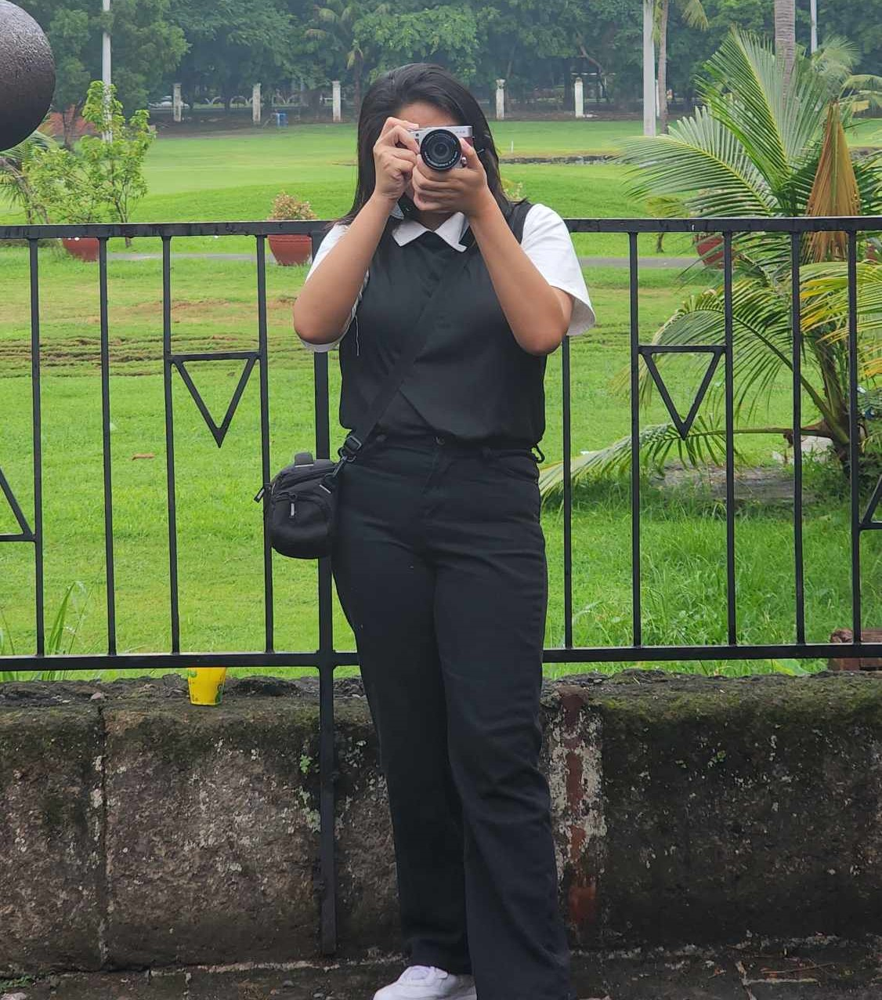
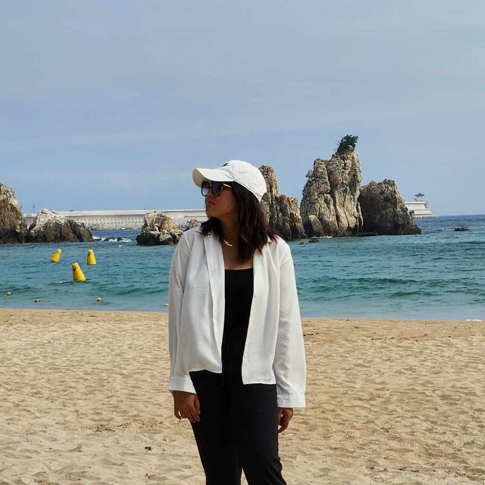

Mary Ann B. Camacho
I am a first-year student at FEU Institute of Technology, where I am pursuing a Bachelor of Science in Information Technology specialization on Business Analytics. I am twenty years old, and I already have a deep interest for technology and its ability to change the world. With a specialization on Adobe, HTML, CSS, JavaScript, and C++, I am enthusiastic about web development and design. I have refined my abilities in making visually appealing, responsive web designs and solid apps that support company goals and user demands via practical projects and education.

My Hobbies
In my free time, I immerse myself in a variety of creative and recreational activities. I have a passion for taking pictures and videos, capturing the beauty of the world around me. Playing the guitar allows me to express my artistic side, while playing badminton keeps me active and energized. I also enjoy editing digital art, transforming ideas into visually appealing creations. Exploring new places is another favorite pastime, providing me with fresh perspectives and inspiration.

"It’s not how far you fall, but how high you bounce that counts.”
-Zig Ziglar
My main objective is to keep improving my knowledge of web design and programming so that I can make websites that are both aesthetically pleasing and easy to use. My goal is to work on creative ideas that push me intellectually and progress technology and commercial expansion.